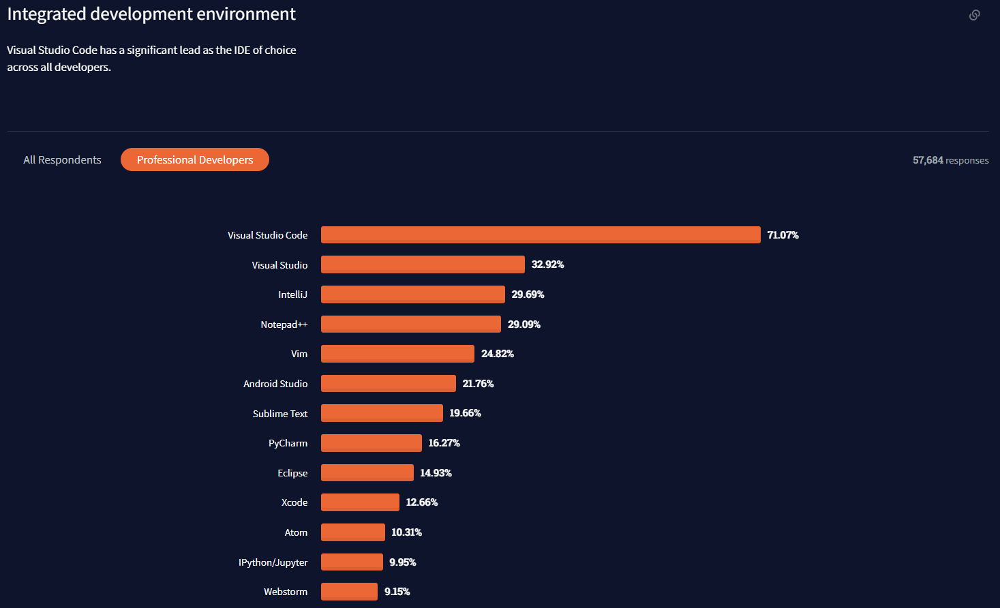

Why does
VIM
still exist in 2022?
VIM is 30 years old
and still going strong...
Stack Overflow Survey
Consistently in the top 5 developer environments used by devs in the past 5 years
Stack Overflow
https://stackoverflow.com/questions/11828270/how-do-i-exit-the-vim-editorhas been viewed 2.6m times
Features of VIM
- Available everywhere
- Powerful customizations
- Keyboard centric
- Flexible command system
Then

Now

The problem with traditional text editors
- Navigation optimised for typing documents
- Relies heavily on the GUI
- But it was "good enough"
Fun facts about QWERTY

- First appeared in 1874
- QWERTY layouts were developed as a means to slow typists down
- But it was "good enough"
DVORAK layout

- Introduced in 1936
- More intuitive and efficient than QWERTY
- But never really caught on
All of this breaks flow
even if just a little
Vi was born
Key idea #1: Modal text editing
Separates navigation from editing
- Allows us to repurpose the home row
- More flexibility to work with the text
Key idea #2: Text objects
Text primitives suited for code
- Words, lines and paragraphs
- Delimiters or enclosing tags
- Pages
Key idea #3: Melody
Compose commands infinitely
All of this allows you to stay close to the home row
Keeps you in the flow
Other great ideas
- Highly configurable
- Programmable
- Close to the terminal
How can I get started?
VSCode has a plugin!
https://marketplace.visualstudio.com/items?itemName=vscodevim.vim
How to do VIM right
Rule #1
Stay close to the home row
- Arrow keys are bad
- Backspace is bad
- ESC is bad
Rule #2
Avoid using the mouse
- It's easier to navigate with the keyboard
- Your hands are away from the keyboard, bad
Rule #3
Avoid repeating keys, compose
- Saves keystrokes
- Slower
Thank you for listening
Questions?
Learning
Resources
- https://www.daskeyboard.com/blog/typing-through-time-the-history-of-the-keyboard/
- https://pragmaticpineapple.com/how-did-vim-become-so-popular/
- https://www.simplethread.com/vim-at-30-heres-why-its-still-relevant/
- https://www.headspace.com/articles/flow-state
- https://blog.carbonfive.com/vim-text-objects-the-definitive-guide